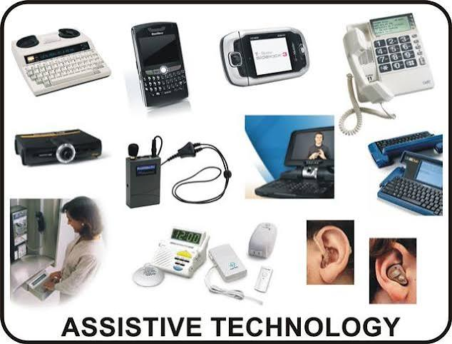
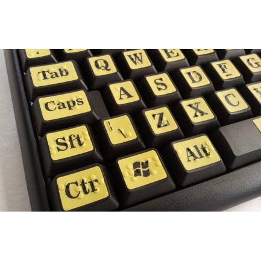

Tecnologias assistivas
Tecnologias assistivas são recursos que ajudam pessoas a realizar atividades com mais autonomia. Na internet, elas podem apoiar tarefas como ler uma notícia, preencher um formulário ou encontrar uma informação no portal da faculdade.

Como funciona um leitor de tela?
Um leitor de tela pode anunciar em voz alta o texto e os elementos de uma página. Quando o HTML identifica corretamente títulos, links e botões, a pessoa pode navegar por esses elementos e localizar uma seção específica sem ouvir a página inteira desde o começo.
Outras formas de ler e interagir
Um ampliador de tela pode aumentar a área em que a pessoa está lendo. Uma linha Braille pode apresentar em braile o texto recebido do leitor de tela. Teclados adaptados podem facilitar a digitação e o acionamento de comandos conforme a necessidade de cada pessoa.
